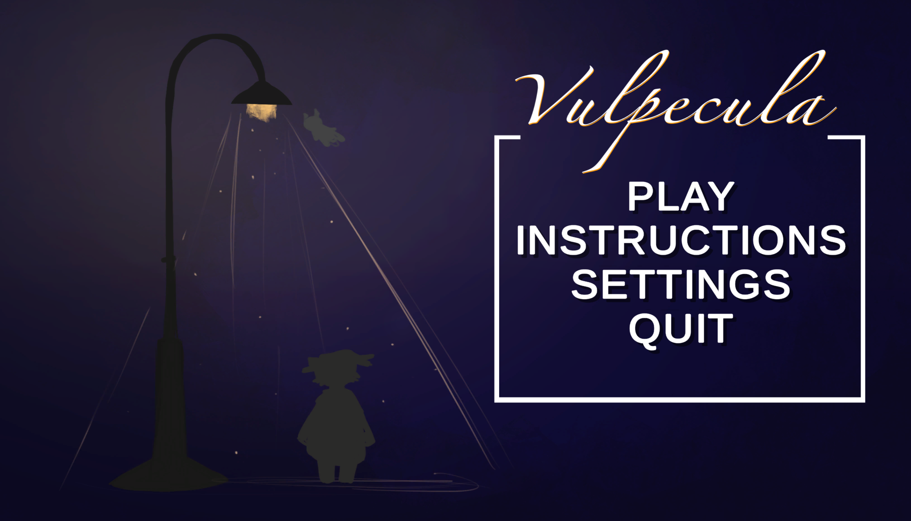
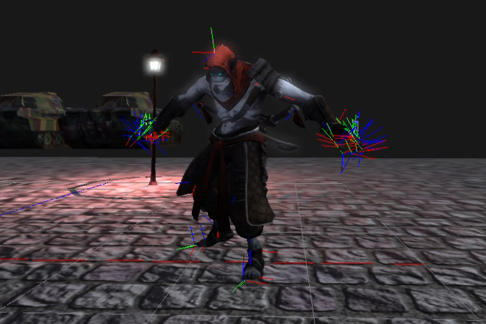
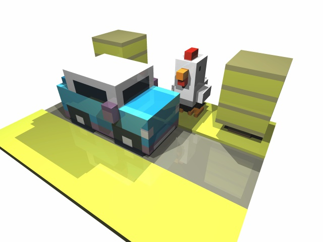
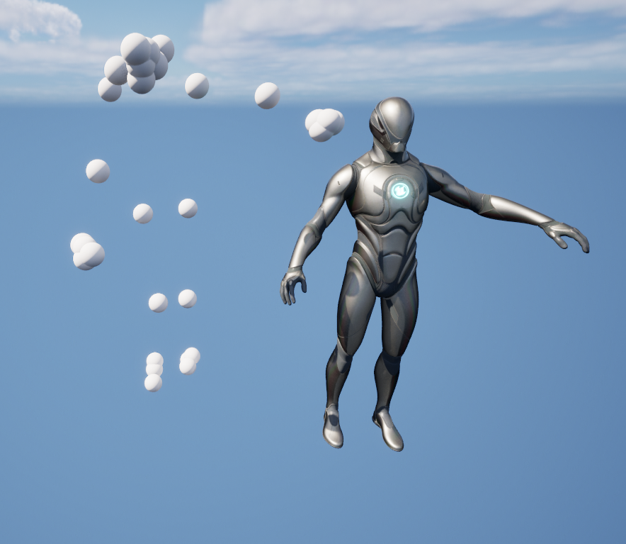

Trystan Nguyen
Game Developer | Software Engineer
LinkedIn
(current)
GitHub
(current)
Vulpecula
3D Unity Game Project for UCSC capstone project
Roles: Gameplay Programmer / VFX Artist
Tools: Unity, C#, Visual Studio Code, Git
Home Page
Src Code

Prime Engine
Modified the Prime Game Engine to include the following functionalities:
View frustum culling to reduce rendering work (FOV decreased for demo purposes)
Implement blended, partial, and addivite animations
Implement scene aware animations that play relative to raycasted position
Implement inverse kinematic override
Tools: C++, Lua, Python, Visual Studio, Maya
Culling Demo
Animation Blending Demo
Reactive Animation Demo
Inverse Kinematics Demo

Computer Graphics
Includes coursework from CSCI 420 at USC:
Height map vertex deformation
Rollercoaster implemented from splines with Phong shading
Multiprocess raytracer with antialiasing and reflection options
Tools: C++, OpenGL, GLSL, Visual Studio, Git
Source Code

Motion Capture Streamer (In Development)
Animate a 3D skeletal rig in Unreal Engine 5 using AI driven computer vision solution from MediaPipe
Calculates the world coordniates of motion capture data by computing screen to world transformations of MediaPipe landmarks
Calulate the 3D skeletal transformation derived from filtered motion capture landmarks
Multiprocessed python scripts so multiple computer vision solutions can access the webcam stream simultaneously
Tools: C++, Unreal Engine, RapidJSON, Python, MediaPipe, Visual Studio, Git
Python Source Code
C++ Source Code (NOT PUBLIC YET)
